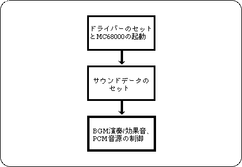

Return to previous page | Return to menu | Go to next page
To control sound with SEGA Saturn using a sound driver, follow the steps below.

In order to use sound, you must first start MC68000 for sound control. A driver program that runs on the MC68000 is also required. These can be set by executing the library function “slInitSound ()”.
This function “slInitSound ()” executes the following procedure.
By simply executing “slInitSound ()” above, the performance data has not been set yet, so set it. Performance data is stored after 0xB000 (0x25A0B000 on the program) in the memory area of MC68000 (please contact the sound designer as it may vary depending on the map data). Transfer using the following function:
Now you are ready to play.
Music (and sound effects) are handled in units called sequences. A sequence is to play a series of sound combinations (flow) from the beginning to the end (this is a song or a one-shot sound effect). You can play up to eight at the same time. SGL allocates number 0 for BGM in these 8 sequences. To play BGM, execute the “slBGMOn ()” function.
Song: Song (sound effect) number Prio: Priority when using sound sources Volume: Volume Rate: Time to reach Volume
The volume “volume” can be selected from 0 to 127. The higher the value, the higher the volume. The rate “Rate” is the time to reach the specified volume, and can be specified from 0 to 255. If it is 0, it will be instantly volume, and if it is 1-255, it will fade in from volume 0 to the specified volume.
BGM can change the tempo and volume by the following functions, and can stop, pause and resume the performance.
slBGMTempo (Sint16 Tempo); / * Change tempo * / slBGMFade (Uint8 Volume, Uint8 Rate); / * Volume change * / slBGMOff (); / * Stop playing * / slBGMPause (); / * Pause performance * / slBGMCont (); / * Resume performance * / slBGMStat (); / * Check if playing * /
Sound effects are also managed as a sequence, similar to the above BGM. To output sound effects, execute the function “slSequenceOn ()”.
Song: Song (sound effect) number Prio: Priority when using sound sources Volume: Volume Pan: Left / right volume distribution
The parameters are similar to BGM functions, but the parameter Pan is different. This indicates how the left and right volumes are distributed, and can be used to determine the direction in which the sound can be heard. For Pan, values from -128 to +127 can be specified, -128 represents the left, 0 represents the front, and +127 represents the right.
Assigned value of parameter Pan:
Left : -128 << 0 >> +127 : Right
If you set Volume or Pan depending on the distance or direction in the explosion of a 3D shooting game, you should feel more realistic.
This function “slSequenceOn ()” returns the number of the pronunciation management number for the specified sound effect. This pronunciation management number is used when the output sound effect is changed using the following function.
slSequenceTempo (Uint8 Seqnm, Sint16 Tempo); / * Change tempo * / slSequenceFade (Uint8 Seqnm, Uint8 Volume, Uint8 Rate); / * Change volume * / slSequencePan (Uint8 Seqnm, Uint8 Pan); / * Change the direction of occurrence * / slSequenceOff (Uint8 Seqnm); / * Stop the sequence * / slSequencePause (Uint8 Seqnm); / * Pause the sequence * / slSequenceCont (Uint8 Seqnm); / * Resume a paused sequence * / slSequenceStat (Uint8 Seqnm); / * Check if the sequence is playing * /
You can use a PCM sound source to output sampled sound effects such as voice and explosion sounds. In addition to the above sequence, sound effect playback by PCM stream can be output simultaneously up to 4 channels. When using a PCM stream, the function “slPCMOn ()”